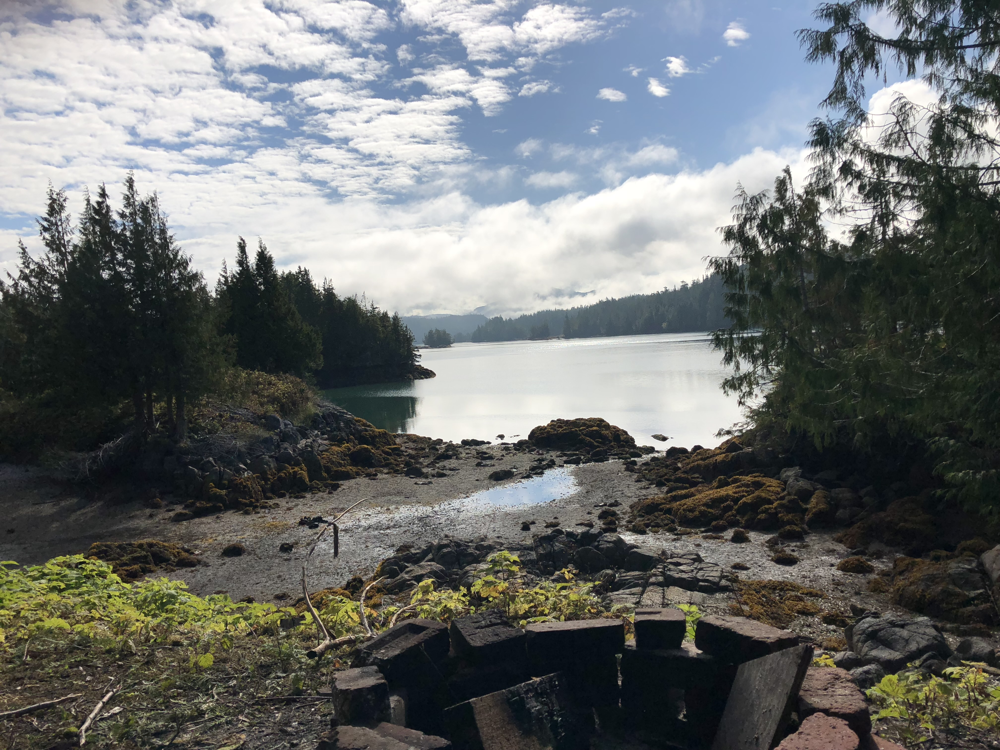
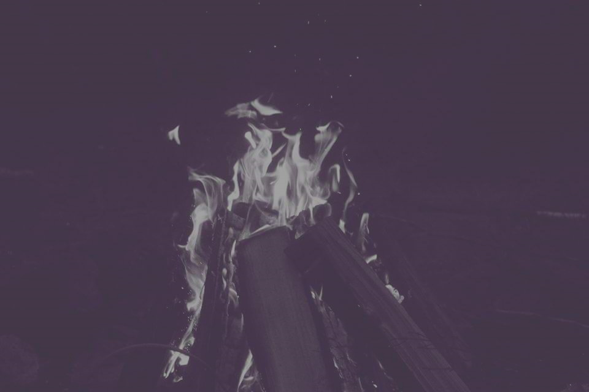

I am Kelly Anderson, I am 23 years old. I come from the Gwa'sala nation (Smith Inlet)on my fathers side and Heiltsuk Nation (Bella Balla) on my mothers side. I live in Port Hardy B.C on the Gwa'sala-'Nakwaxda'xw reserve called Tsulquate. For the past 2 years, I've been working with the Gwa'sala-'Nakwaxda'xw Language Program as a Local Research Lead. We are also working with First Voices to get our Bak̓wa̱mk̓ala Language on First Voice, so our people can learn our language.
Some films I made